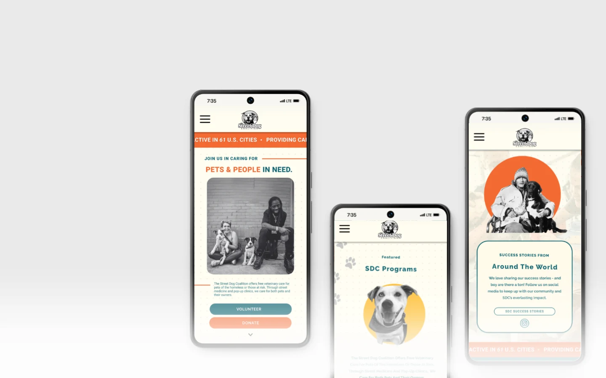
Street Dog Coalition
Non-Profit RedesignStreet Dog Coalition provides veterinary care to pets of people experiencing homelessness. Through user research, we discovered that important information - including donations, volunteer opportunities, and clinic resources - was difficult to find. Our redesign focused on simplifying navigation while building trust through a more compassionate digital experience.
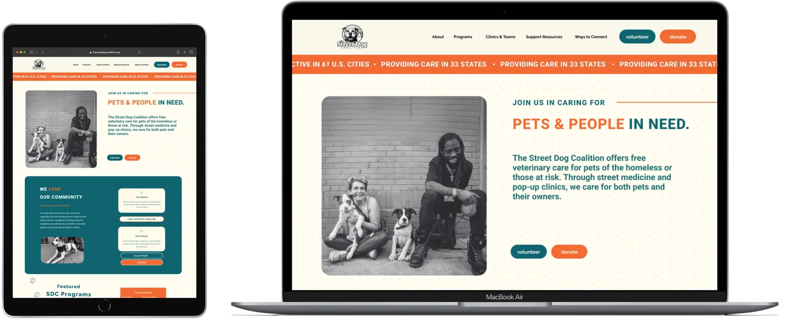
My Role
As UX/UI lead, I guided the design process by leveraging qualitative and quantitative insights from stakeholder interviews and user feedback. I facilitated workshops and ideation sessions that aligned user needs with Street Dog Coalition's mission, creating user flows, wireframes, prototypes, and high-fidelity mockups that balanced emotional storytelling with streamlined conversion paths.
Key Contributions
- Directing stakeholder synthesis to develop user-centered solutions.
- Designing intuitive, accessible web experiences while maintaining brand identity.
- Producing essential UX artifacts, such as journey maps and personas.
- Collaborating cross-functionally to align design with development goals.
- Advocating for best practices in information architecture, usability, and emotional storytelling.
Project Overview
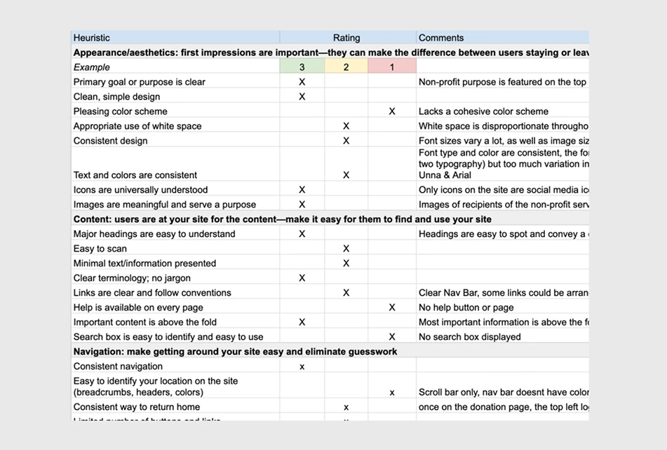
Problem
The existing site had a rich mission but lacked intuitive navigation, buried impact data, and underutilized emotional storytelling - making it hard to convert visitors into donors or volunteers.
Goal
Craft a user experience framework that:
- Simplifies access to mission, volunteer, event, and donation info
- Inspires empathy through storytelling and visuals
- Increases engagement through optimized UX flows
Research & Discovery
Stakeholder Interviews & Competitive Analysis
Interviews revealed two audiences with different needs: those seeking help and those donating time or money. Help-seekers visit less often than donors, but easy access to information is essential for them.
Nonprofits like StreetVet and No-Kill initiatives use clear tab structures ("Get Involved"), button-first CTAs ("Find a clinic near you"), and story-first UX with people-and-pets hero images.
Key Insights
- Visitors want transparent impact stats and local event details.
- Emotional visuals drive donations and volunteer sign-ups.
- Clear menus and flows enable swift engagement.
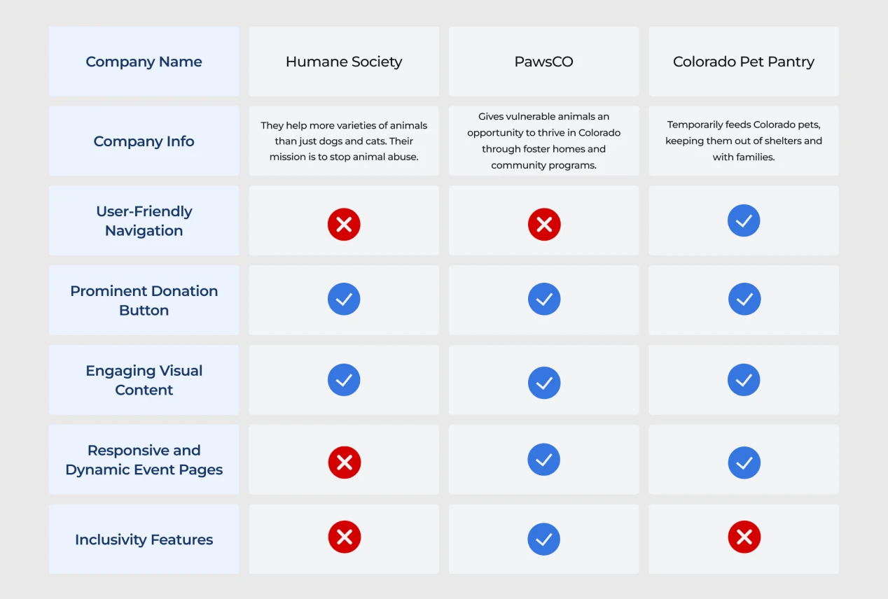
Qualitative Interviews
We conducted 7 qualitative interviews to understand donor habits and gather multiple perspectives as we identified opportunities for improvement.
Key Findings
- Finding volunteer opportunities felt hidden - users struggled to determine where to begin helping.
- Donation pathways lacked visual hierarchy - the organization's biggest call-to-action was competing with secondary content.
- Users had difficulty locating clinic schedules and pet resources - navigation relied on organizational terminology instead of user language.
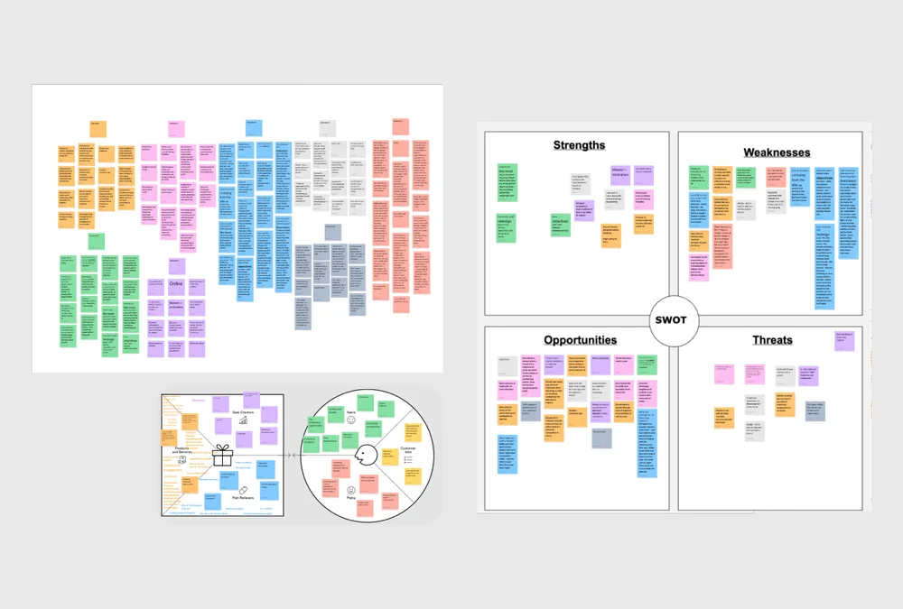
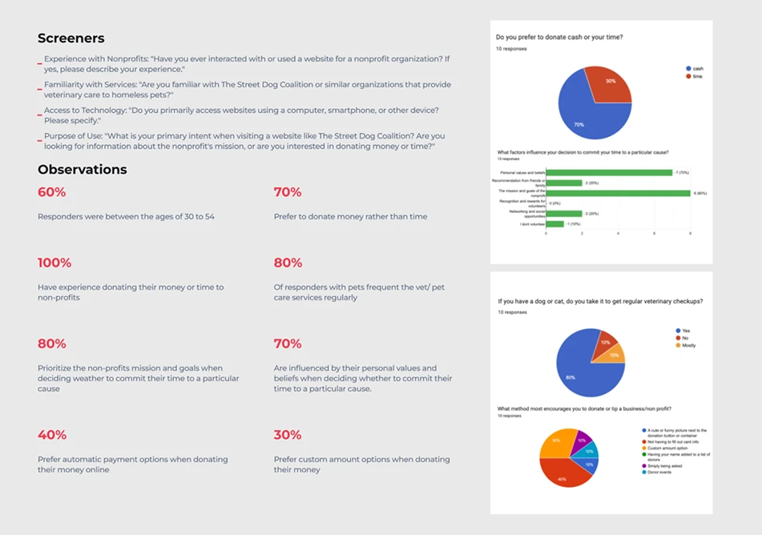
Surveys
We conducted ten surveys to gather insights for redesigning Street Dog Coalition's website - understanding preferences for donating cash versus time, identifying what encourages donations or tips, and exploring the personal experiences that inspire volunteerism.
Defining User Persona
Stakeholder interviews revealed two primary audiences with distinct needs: those seeking help and those giving help. Survey insights further segmented the giving-help audience into four behavioral groups based on motivations and goals. These findings informed our user personas, providing a framework to prioritize navigation, streamline decision-making, and design user flows around the tasks that mattered most to each audience.
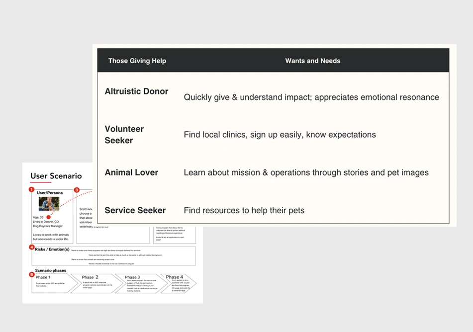
Experience and Flow
The segmented audiences informed our information architecture and primary user flows, allowing us to prioritize navigation around user intent rather than organizational structure. This ensured donors, volunteers, service seekers, and supporters could quickly reach the content most relevant to their goals.
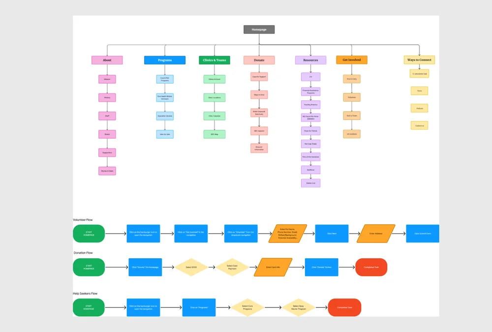
Visual Design & UI
During the interviews, users mentioned they'd prefer uplifting photos and inviting colors to be integrated into the design.
Findings & Iterations
- Users loved hero imagery and quick facts.
- Local clinic navigation was intuitive after adding filters.
- Improved form labels and default donation amounts smoothed the donation process.
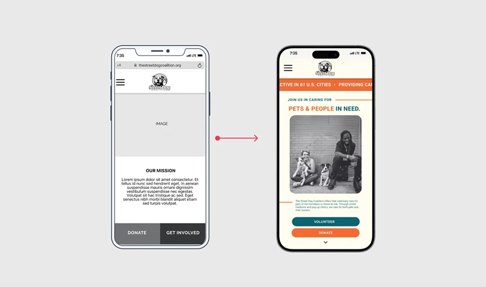
Color & Visual Strategy
To create a more approachable and engaging experience, we expanded the site's color palette beyond the existing brand colors. Strategic color coding was introduced to improve visual hierarchy, support wayfinding, and help users quickly distinguish between key content areas and actions. The brighter, more optimistic palette reflects the organization's mission while making the interface feel more welcoming and easier to navigate.
Updated site menu: About · Programs · Clinics & Teams · Resources · Ways to Connect · Donate · Get Involved
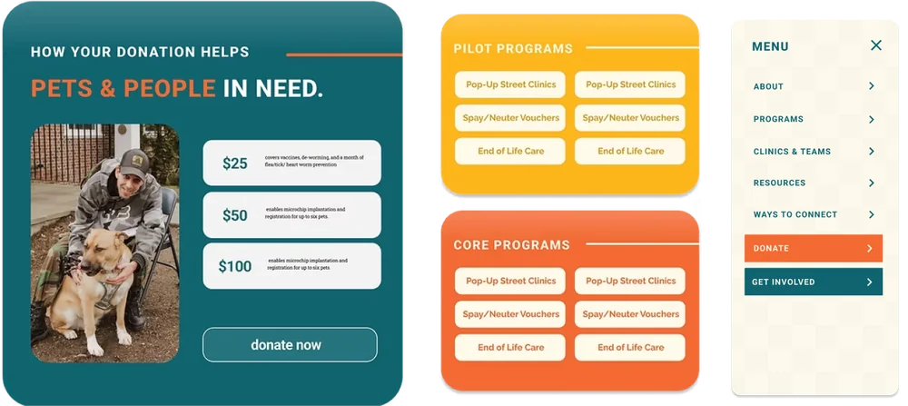
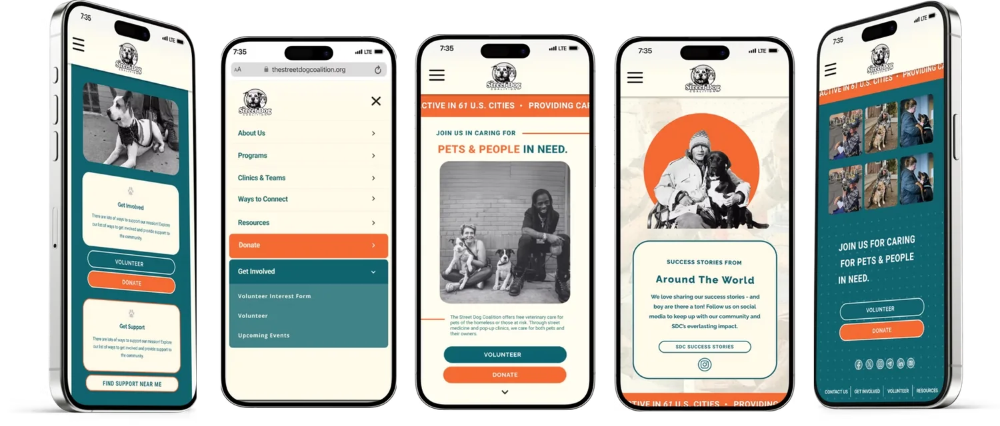
Usability Testing
Mid-fi Testing
Key Insights
- Donation path is intuitive, but CTA visibility could be improved (e.g. color emphasis).
- Users need clearer guidance when choosing between homepage links and navigation menus.
- Program structure is confusing - hover tooltips or better labels could help clarify categories.
Next steps: refine menu hierarchy, add program preview links, and expand wireframes to complete task paths.
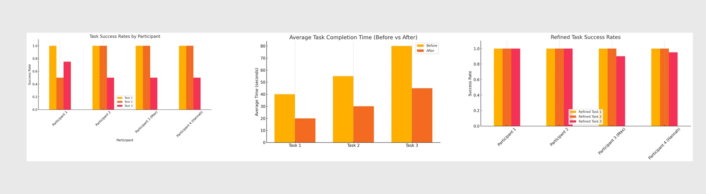
Post-Iteration Testing Summary
After addressing UI and navigation feedback from mid-fi testing, task success rates improved across the board, with nearly perfect scores across all tasks.
40–45% faster
Average task completion time across all tasks after iterating on mid-fi testing feedback.
80s → 45s
Task 3's completion time - the largest single-task improvement - after streamlining program navigation and hierarchy.
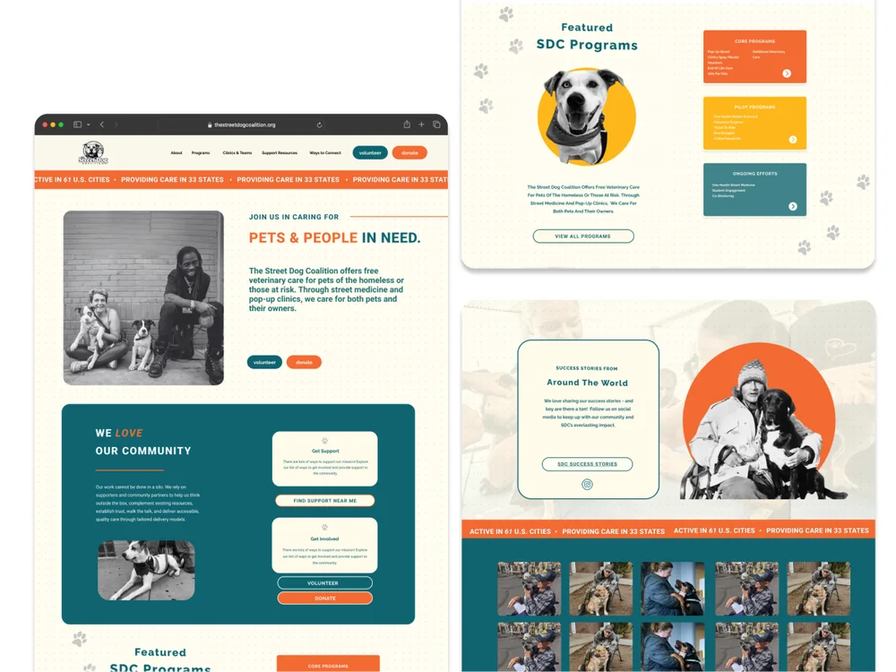
Next Steps
Future iterations would prioritize making essential resources more accessible for users seeking care. A centralized resource hub could consolidate educational content, printable materials, and downloadable guides into a single, searchable location.
Adding a filterable directory of Street Dog Coalition pop-up veterinary clinics - with schedules, locations, and print-ready event information - would improve discoverability and better support users who rely on offline access.
Additional work would include refining the information architecture and implementing SEO strategies to ensure critical services are easier to find through search.